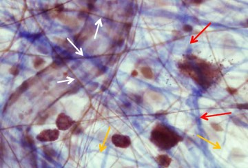

Bindweefselvezels
Bindweefselvezels kunnen ingedeeld worden in 3 types: collageenvezels, reticulaire vezels en elastische vezels.
Collageenvezels zijn opgebouwd uit het eiwit collageen. Er bestaan een 30tal types collageen, maar het merendeel van de collageenvezels behoort tot de types I – IV. Collageenvezels zijn stevig en trekvast.
Collageenvezels zijn acidofiele structuren. Hierdoor kleuren ze met een HE-kleuring eosinofiel (roze). Bij meer specifieke ‘bindweefselkleuringen’ spelen andere eigenschappen een rol. Hier kleuren collageenvezels, afhankelijk van de gebruikte kleurstoffen, dikwijls groen of blauw.
Reticulaire vezels of reticulinevezels zijn eigenlijk ook collageenvezels, van het type III. Het zijn dunne vertakkende vezels die een los geweven netwerkje (reticulum) vormen. Door gebruik te maken van bijvoorbeeld een PAS-kleuring of een zilverkleuring kunnen we reticulinevezels duidelijk onderscheiden van dikkere collageenvezels die bundels vormen.
Elastische vezels bevatten het rubberachtige eiwit elastine. Dit maakt de dunnere elastine vezels erg rekbaar. Elastische vezels kunnen ook een netwerk vormen waarbij de vezels op de kruispunten met elkaar versmelten. We kunnen ze specifiek zichtbaar maken door elastinekleuringen zoals bijv. orceïne. Dit orceïne kleurt de elastische vezels roestbruin.
Bindweefselvezels kunnen ingedeeld worden in 3 types: collageenvezels, reticulaire vezels en elastische vezels.
Collageenvezels zijn opgebouwd uit het eiwit collageen. Er bestaan een 30tal types collageen, maar het merendeel van de collageenvezels behoort tot de types I – IV. Collageenvezels zijn stevig en trekvast.
- Collageen type I vormt stevige vezels die zich groeperen in bundels. Ze komen voor in het bindweefsel van de huid, pezen, gewrichtskapsels enz.
- Collageen type II bestaat uit losse fibrillen en vind je voornamelijk terug in kraakbeen.
- Collageen type III: de vezels worden hier reticulaire vezels genoemd (zie hieronder).
- Collageen type IV is een typische component van de lamina basalis onder epithelen of rond spiercellen.
Collageenvezels zijn acidofiele structuren. Hierdoor kleuren ze met een HE-kleuring eosinofiel (roze). Bij meer specifieke ‘bindweefselkleuringen’ spelen andere eigenschappen een rol. Hier kleuren collageenvezels, afhankelijk van de gebruikte kleurstoffen, dikwijls groen of blauw.
Reticulaire vezels of reticulinevezels zijn eigenlijk ook collageenvezels, van het type III. Het zijn dunne vertakkende vezels die een los geweven netwerkje (reticulum) vormen. Door gebruik te maken van bijvoorbeeld een PAS-kleuring of een zilverkleuring kunnen we reticulinevezels duidelijk onderscheiden van dikkere collageenvezels die bundels vormen.
Elastische vezels bevatten het rubberachtige eiwit elastine. Dit maakt de dunnere elastine vezels erg rekbaar. Elastische vezels kunnen ook een netwerk vormen waarbij de vezels op de kruispunten met elkaar versmelten. We kunnen ze specifiek zichtbaar maken door elastinekleuringen zoals bijv. orceïne. Dit orceïne kleurt de elastische vezels roestbruin.

Op deze foto kan je de types bindweefselvezels terugvinden. De rode pijlen duiden collageenvezels aan, de oranje pijlen duiden reticulaire vezels aan en de witte pijlen wijzen naar elastinevezels (deze laatste kleuren hier bruin door een specifieke kleuring)
Vordering bindweefsel algemeen: